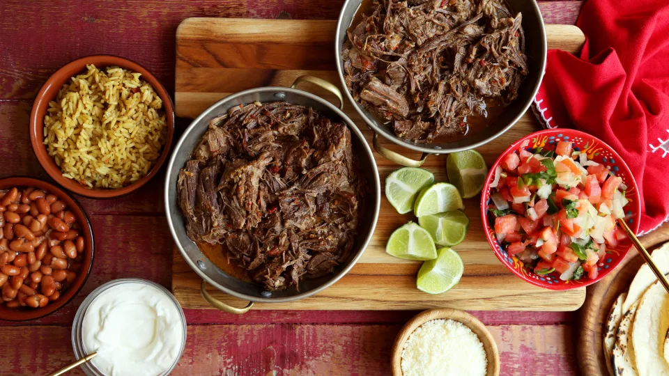

Best Barbacoa Recipe

Description
This is the best barbacoa recipe, just like Chipotle. It's great over white rice.
Ingredients
- Chuck roast
- Apple cider vinegar
- Minced garlic cloves
- Cumin
- Oregano
- Salt and Pepper
- Olive oil
- Chicken broth
- Lime juice
- Chipotle chiles in adobo
Steps
- Combine vinegar, lime juice, chipotles, garlic, cumin, oregano, black pepper, salt, and cloves in a blender or processor on high speed until smooth.
- Remove mos of the fat from the roast and then cut into large chunks.
- Pour oil into a frying pan and sear all sides of roast on medium-high heat until browned.
- Place meat into Crockpot and pour adobo sauce over meat.
- Pour in the chicken broth and add bay leaves.
- Cook on high heat 6 hours or on low all day.
- While still in the Crockpot, shred the meat with two forks and turn the heat to warm. Serve with white rice.